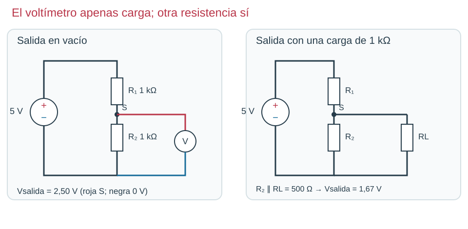

Contenido
Repartir la tensión
En la clase anterior viste que, en serie, la tensión de la fuente se reparte entre las dos resistencias. Ese reparto es muy útil: si tomas la tensión del punto que hay entre las dos resistencias, obtienes una tensión más pequeña que la de la fuente. Ese montaje se llama divisor de tensión y ese punto intermedio es la salida S.

Llamamos R₁ a la resistencia de arriba (entre el + y S) y R₂ a la de abajo (entre S y 0 V). La salida es la tensión que cae en R₂:
Vsalida = Ventrada · R₂ / (R₁ + R₂)
Ejemplo resuelto
Fuente de 5 V, R₁ = 1 kΩ, R₂ = 2,2 kΩ. Las dos en la misma unidad, kΩ:
- Vsalida = 5 · 2,2 / (1 + 2,2) = 5 · 2,2 / 3,2 = 3,44 V.
- Comprobación: la corriente es 5 / 3200 Ω = 1,56 mA. En R₁ caen 1,56 V y en R₂, 3,44 V. Suman 5 V.
Prueba el divisor
Mueve los valores en el simulador de abajo. Predice antes de cambiar: ¿sube o baja la salida?
¿Qué pasa si conectas algo a la salida?
Si conectas a S otro componente, por ejemplo una resistencia RL de 1 kΩ (la carga), la corriente que baja de R₁ ya tiene dos caminos: R₂ y RL, que quedan en paralelo. Juntas equivalen a 500 Ω, así que la salida baja de 2,50 V a 5 · 500 / 1500 = 1,67 V.
Esto importará más adelante: cuando conectes un transistor a la salida de un divisor, la salida bajará un poco. No es un fallo: es la carga.
Ahora tú. Con 5 V y R₁ = R₂ = 1 kΩ, ¿qué salida hay? ¿Y si duplicas solo R₂? ¿Y si duplicas solo R₁? Compruébalo en el simulador y anótalo en el apartado 1 del informe.
Ver solución
2,50 V. Duplicando R₂: 5 · 2 / 3 = 3,33 V. Duplicando R₁: 5 · 1 / 3 = 1,67 V.
Compruébalo
Fuente de 5 V, R₁ arriba y R₂ abajo. Elige la respuesta correcta.